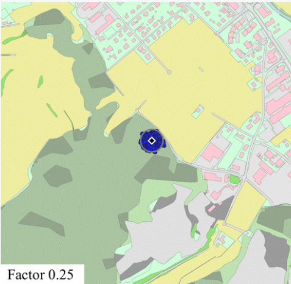
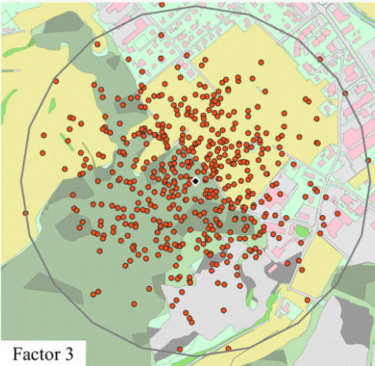
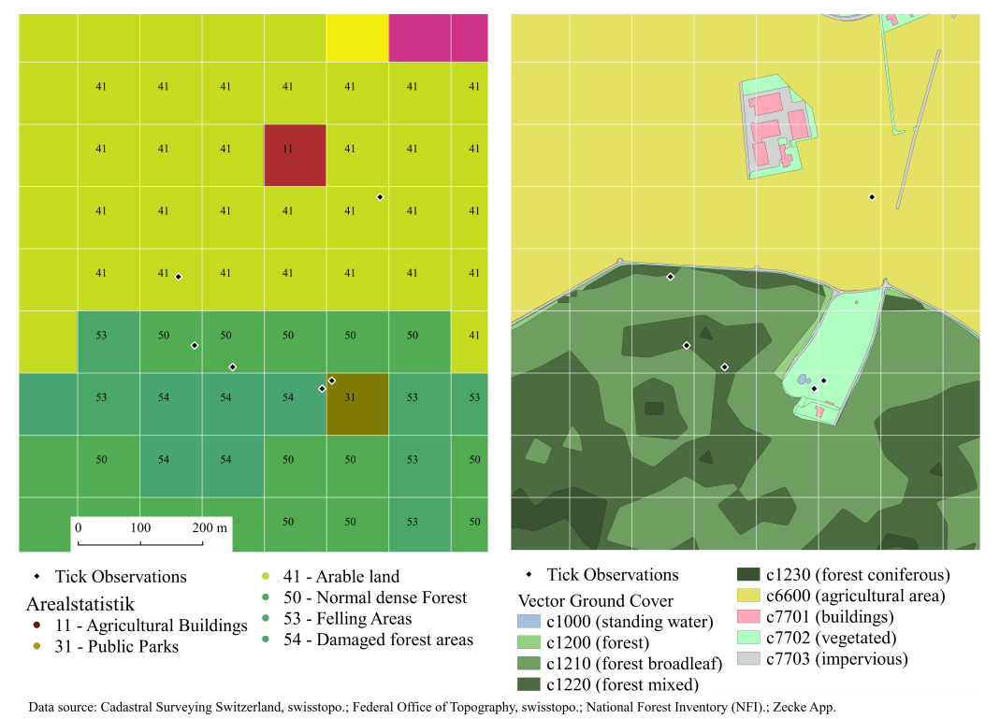

Risiko Zeckenstich
Ein Zusammenspiel aus Gefahr und Exposition

Nils Ratnaweera
Research Associate at the Research Group for Geoinformatics
ZHAW School of Life Sciences and Facility Management
Institute of Natural Resource Sciences
Grüentalstrasse 14
8820 Wädenswil
+41 (0) 58 934 55 63 / nils.ratnaweera@zhaw.ch
Jeden Frühling: Zecken im Fokus
Zecken App
A&K Strategy GmbH
Attack and Kill
Zecken App


Google Suchanfragen (Ticks) vs. Meldungen ZeckenApp
Zeckenstich Meldungen 2015 - 2023
40'000 zuverlässige Meldungen
Zeckenstich-Gefahrenmodell
Zeckenstichmeldungen x Expertenwissen
Zeckenstich-Gefahrenmodell
Zeckenstichmeldungen x MachineLearning



Risk
=
Hazard
×
Exposure
Risk
=
Hazard
×
Exposure
Hazard
=
Risk
Exposure
- Model 1: Pull
- Model 2: Push
- Model 3: Strava
Next Steps
Was?
- von Expert Based → Machine Learning wechseln
- Exposure Problematik lösen
- Einfluss von Wetter mitberücksichtigen
- Vector Based Ansatz weiter verfolgen (ganze Schweiz)
- Gefahrenkarte auf verschiedenen Skalen
Wie?
- Suche nach finanzierungsquellen
- DataChallenge in der OpenGeoHub SummerSchool im Herbst 2023